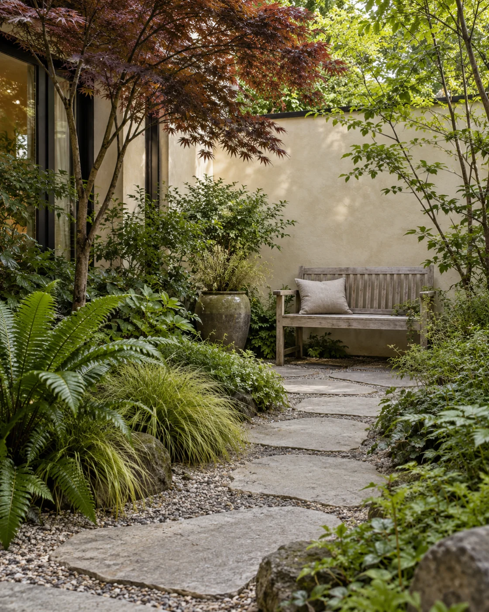
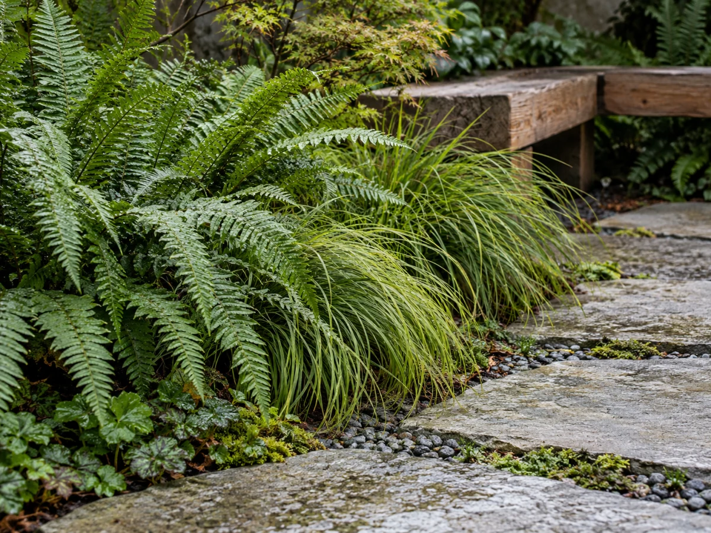

Garden design
A considered plan for paths, planting and the places you’ll want to spend time.
Explore a design ↗LANDSCAPE DESIGN / PACIFIC NORTHWEST
Thoughtful gardens for everyday living. From a quiet corner to a complete outdoor space, start with a little possibility.
Find your starting point ↗
Spaces that feel like you.
Made for the way you live.

01 / WHAT WE CAN DO
You don’t need a blank canvas. Just a space you’d like to enjoy a little more.
A considered plan for paths, planting and the places you’ll want to spend time.
Explore a design ↗Thoughtful tending that helps an established garden find its rhythm, season after season.
Talk about care ↗A balcony, a doorstep, a sunny corner. Small spaces can make a lovely difference.
Start something small ↗
02 / THE WAY WE WORK
Good gardens begin with a conversation, not a shopping list.
We start with what you have, how you use your space and what you’d like to change. Then we shape a clear plan around your priorities, your time and your budget.
Share the space and what you have in mind.
Agree the direction, scope and next steps.
Bring it to life, with a guide for what comes next.
03 / GOOD TO KNOW
Not sure where to start?
That’s a good place to begin.
No. Start with what isn’t working and what you’d like to feel different. The first conversation helps find a useful direction.
Yes. Courtyards, containers and compact corners are part of the example service menu.
A real project would receive a written scope and quote before work begins. This demonstration does not sell services or take payments.
No. Cedar & Fern is a fictional website sample by HensTek. The content editor and inquiry preview run on your device; no inquiry is sent.
04 / YOUR NEXT CHAPTER
Tell us a little about your space.
We’ll find the right first
step.